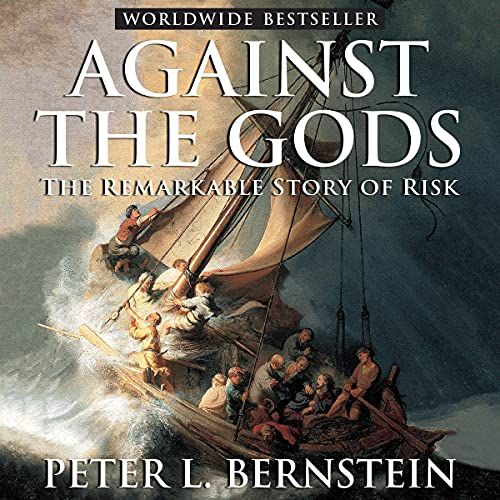

Parte I - Introducción (Extracto del libro de Peter L. Bernstein - Against The Tods). Este libro cuenta la historia de un grupo de pensadores cuyo notable visión reveló cómo poner el futuro al servicio del presente.

¿Qué es lo que distingue a los miles de años de historia de lo que consideramos tiempos modernos? la respuesta va mucho más allá del progreso de la ciencia, la tecnología, el capitalismo y la democracia”.
“El pasado distante estuvo plagado de brillantes científicos, matemáticos, inventores, tecnólogos y filósofos políticos. Cientos de años antes del nacimiento de Cristo, se habían cartografiado los cielos, se había construido la gran biblioteca de Alejandría y se había enseñado la geometría de Euclides. La demanda de innovación tecnológica en la guerra era tan insaciable entonces como lo es hoy.
El carbón, el petróleo, el hierro y el cobre han estado al servicio de los seres humanos durante milenios, y los viajes y las comunicaciones marcan los comienzos de la civilización registrada”.
“La idea revolucionaria que define el límite entre la modernidad los tiempos y el pasado es el dominio del riesgo: la noción de que el futuro es más que un capricho de los dioses y que los hombres y las mujeres no son pasivos ante la naturaleza. Hasta que los seres humanos descubrieron un camino para cruzar esa frontera, el futuro era un espejo del pasado o el turbio dominio de los oráculos y adivinos que tenían el monopolio del conocimiento de los eventos anticipados”.
Este libro cuenta la historia de un grupo de pensadores cuyo notable visión reveló cómo poner el futuro al servicio del presente. Por mostrando al mundo cómo entender el riesgo, medirlo y sopesar su consecuencias, convirtieron la asunción de riesgos en uno de los principales catalizadores que impulsan a la sociedad occidental moderna.
Como Prometeo, desafiaron a los dioses y sondearon las tinieblas en busca de la luz que convertía el futuro de enemigo en oportunidad. La transformación de las actitudes hacia la gestión de riesgos desencadenada por sus logros ha canalizado la pasión humana por los juegos y las apuestas hacia el crecimiento económico, la mejora de la calidad de vida y el progreso tecnológico.
Al definir un proceso racional de asunción de riesgos, estos innovadores proporcionaron el ingrediente faltante que ha impulsado a la ciencia y la empresa al mundo de la velocidad, el poder, la comunicación instantánea y las finanzas sofisticadas que marcan nuestra época.
Sus descubrimientos sobre la naturaleza del riesgo y el arte y la ciencia de la elección se encuentran en el centro de nuestra economía de mercado moderna a la que las naciones de todo el mundo se apresuran a unirse. Dados todos sus problemas y trampas, la economía libre, con opciones en su centro, ha brindado a la humanidad un acceso sin precedentes a las cosas buenas de la vida.
La capacidad de definir lo que puede suceder en el futuro y elegir entre alternativas está en el corazón de las sociedades contemporáneas. La gestión de riesgos nos guía en una amplia gama de toma de decisiones, desde la asignación de riqueza hasta la protección de la salud pública, desde la guerra hasta la planificación de una familia, desde el pago de primas de seguro hasta el uso del cinturón de seguridad, desde la siembra de maíz hasta la comercialización de copos de maíz.
En los viejos tiempos, las herramientas de agricultura, manufactura, gestión comercial y comunicación eran simples. Las averías eran frecuentes, pero las reparaciones se podían hacer sin llamar al plomero, al electricista, al informático, o a los contadores y asesores de inversiones. El fracaso en un área rara vez tuvo un impacto directo en otra.
Hoy en día, las herramientas que utilizamos son complejas y las averías pueden ser catastróficas, con consecuencias de largo alcance. Debemos ser constantemente conscientes de la probabilidad de mal funcionamiento y errores.
Sin un dominio de la teoría de la probabilidad y otros instrumentos de gestión de riesgos, los ingenieros nunca podrían haber diseñado los grandes puentes que cruzan nuestros ríos más anchos, las casas todavía se calentarían con chimeneas o estufas de salón, los servicios públicos de energía eléctrica no existirían, la poliomielitis seguiría mutilando niños, ningún avión volaría y los viajes espaciales serían solo un sueño.
Sin seguro en sus múltiples variedades, la muerte del sostén de la familia reduciría a las familias jóvenes a la inanición o la caridad, se negaría la atención médica a más personas y solo los más ricos podrían permitirse el lujo de tener una casa. Si los agricultores no pudieran vender sus cosechas a un precio fijado antes de la cosecha, producirían muchos menos alimentos de los que producen.
Si no tuviéramos mercados de capitales líquidos que permitieran a los ahorradores diversificar sus riesgos, si los inversores estuvieran limitados a poseer una sola acción (como lo estaban en los primeros días del capitalismo), las grandes empresas innovadoras que definen nuestra era, empresas como Microsoft, Merck , DuPont, Alcoa, Boeing y McDonald’s, nunca habrían llegado a existir. La capacidad de gestionar el riesgo y, con ella, el apetito por asumir riesgos y tomar decisiones con visión de futuro, son elementos clave de la energía que impulsa el sistema económico.
La concepción moderna del riesgo tiene sus raíces en el sistema de numeración hindú-árabe que llegó a Occidente hace setecientos u ochocientos años. Pero el estudio serio del riesgo comenzó durante el Renacimiento, cuando la gente se liberó de las limitaciones del pasado y sometió creencias arraigadas a un desafío abierto. Era una época en la que gran parte del mundo estaba por descubrirse y explotarse sus recursos. Fue una época de agitación religiosa, capitalismo naciente y un enfoque vigoroso de la ciencia y el futuro.
En 1654, una época en que el Renacimiento estaba en pleno apogeo, el Chevalier de Mere, un noble francés aficionado tanto al juego como a las matemáticas, desafió al famoso matemático francés Blaise Pascal para resolver un rompecabezas. La pregunta era cómo dividir las apuestas de un juego de azar inacabado entre dos jugadores cuando uno de ellos está por delante. El rompecabezas había confundido a los matemáticos desde que lo planteó el monje Luca Paccioli unos doscientos años antes.
Este fue el hombre que atrajo la atención de los gerentes de negocios de su época sobre la contabilidad de partida doble y enseñó a Leonardo da Vinci las tablas de multiplicar. Pascal pidió ayuda a Pierre de Fermat, un abogado que también era un matemático brillante. El resultado de su colaboración fue dinamita intelectual. Lo que podría parecer una versión del siglo XVII del juego Trivial Pursuit condujo al descubrimiento de la teoría de la probabilidad, el corazón matemático del concepto de riesgo.
Su solución al acertijo de Paccioli significó que, por primera vez, las personas podían tomar decisiones y pronosticar el futuro con la ayuda de números. En los mundos medieval y antiguo, incluso en las sociedades prealfabetizadas y campesinas, las personas lograban tomar decisiones, promover sus intereses y comerciar, pero sin una comprensión real del riesgo o la naturaleza de la toma de decisiones. Hoy, confiamos menos en la superstición y la tradición que la gente en el pasado, no porque seamos más racionales, sino porque nuestra comprensión del riesgo nos permite tomar decisiones de manera racional.
En el momento en que Pascal y Fermat hicieron su avance en el fascinante mundo de la probabilidad, la sociedad estaba experimentando una extraordinaria ola de innovación y exploración.
Para 1654, la redondez de la tierra era un hecho establecido, se habían descubierto vastas tierras nuevas, la pólvora estaba reduciendo a polvo los castillos medievales, la impresión con tipos móviles había dejado de ser una novedad, los artistas eran hábiles en el uso de la perspectiva, la riqueza era vertida en Europa, y la bolsa de valores de Amsterdam florecía.
Algunos años antes, en la década de 1630, la famosa burbuja de los tulipanes holandeses había estallado como resultado de la emisión de opciones cuyas características esenciales eran idénticas a los sofisticados instrumentos financieros que se utilizan en la actualidad.
Estos desarrollos tuvieron profundas consecuencias que pusieron en marcha el misticismo. Para entonces, Martín Lutero había dado su opinión y los halos habían desaparecido de la mayoría de las pinturas de la Santísima Trinidad y los santos. William Harvey había derrocado las enseñanzas médicas de los antiguos con su descubrimiento de la circulación de la sangre, y Rembrandt había pintado “La lección de anatomía”, con su cuerpo humano frío, blanco y desnudo. En tal entorno, alguien pronto habría elaborado la teoría de la probabilidad, incluso si el Chevalier de Mere nunca hubiera confrontado a Pascal con su acertijo.
Con el paso de los años, los matemáticos transformaron la teoría de la probabilidad de un juguete de jugadores a un poderoso instrumento para organizar, interpretar y aplicar información. A medida que se amontonaban ideas ingeniosas, surgieron técnicas cuantitativas de gestión de riesgos que ayudaron a desencadenar el ritmo de los tiempos modernos.
En 1725, los matemáticos competían entre sí para diseñar tablas de esperanza de vida y el gobierno inglés se financiaba a sí mismo mediante la venta de rentas vitalicias. A mediados de siglo, los seguros marítimos se habían convertido en un negocio floreciente y sofisticado en Londres.
En 1703, Gottfried von Leibniz le comentó al científico y matemático suizo Jacob Bernoulli que “[N]ature ha establecido patrones que se originan en el retorno de los eventos, pero solo en su mayor parte”, lo que llevó a Bernoulli a inventar la Ley de los Grandes Números y métodos de muestreo estadístico que impulsan actividades modernas tan variadas como las encuestas de opinión, la cata de vinos, la selección de valores y la prueba de nuevos medicamentos.
La advertencia de Leibniz -“pero sólo en su mayor parte”- fue más profunda de lo que pudo haber imaginado, ya que proporcionó la clave de por qué existe el riesgo en primer lugar: sin esa calificación, todo sería predecible, y en un mundo donde cada evento es idéntico a un evento anterior, nunca ocurriría ningún cambio.
En 1730, Abraham de Moivre sugirió la estructura de la distribución normal, también conocida como curva de campana, y descubrió el concepto de desviación estándar. Juntos, estos dos conceptos conforman lo que popularmente se conoce como la Ley de los Promedios y son ingredientes esenciales de las técnicas modernas para cuantificar el riesgo.
Ocho años más tarde, Daniel Bernoulli, sobrino de Jacob y matemático y científico igualmente distinguido, definió por primera vez el proceso sistemático mediante el cual la mayoría de las personas eligen y toman decisiones.
Aún más importante, propuso la idea de que la satisfacción resultante de cualquier pequeño aumento en la riqueza “será inversamente proporcional a la cantidad de bienes poseídos anteriormente”. Con esa afirmación que suena inocente, Bernoulli explicó por qué el rey Midas era un hombre infeliz, por qué la gente tiende a tener aversión al riesgo y por qué los precios deben caer si se quiere persuadir a los clientes para que compren más. La declaración de Bernoulli se mantuvo como el paradigma dominante del comportamiento racional durante los siguientes 250 años y sentó las bases para los principios modernos de gestión de inversiones.
Casi exactamente cien años después de la colaboración entre Pascal y Fermat, un ministro inglés disidente llamado Thomas Bayes hizo un avance sorprendente en las estadísticas al demostrar cómo tomar decisiones mejor informadas combinando matemáticamente información nueva con información antigua. El teorema de Bayes se enfoca en las ocasiones frecuentes en las que tenemos juicios intuitivos sólidos sobre la probabilidad de algún evento y queremos entender cómo alterar esos juicios a medida que se desarrollan los eventos reales.
Todas las herramientas que utilizamos hoy en día en la gestión de riesgos y en el análisis de decisiones y elecciones, desde la estricta racionalidad de la teoría de juegos hasta los desafíos de la teoría del caos, provienen de los desarrollos que tuvieron lugar entre 1654 y 1760, con solo dos excepciones:
En 1875, Francis Galton, un matemático aficionado que era primo hermano de Charles Darwin, descubrió la regresión a la media, lo que explica por qué el orgullo precede a la caída y por qué las nubes tienden a tener revestimientos plateados. Cada vez que tomamos una decisión basada en la expectativa de que las cosas volverán a la “normalidad”, estamos empleando la noción de regresión a la media.
En 1952, el premio Nobel Harry Markowitz, entonces un joven estudiante de posgrado que estudiaba investigación operativa en la Universidad de Chicago, demostró matemáticamente por qué poner todos los huevos en una sola canasta es una estrategia inaceptablemente arriesgada y por qué la diversificación es lo más cercano que un inversor o gerente de negocios puede jamás ven a un almuerzo gratis. Esa revelación desencadenó el movimiento intelectual que revolucionó Wall Street, las finanzas corporativas y las decisiones comerciales en todo el mundo; sus efectos todavía se sienten hoy.
continuará…